직업상담사-1급(구) (2003-08-10 기출문제)
1과목: 고급직업상담·심리학
1. 직무기술서와 직무명세서에 대한 설명 중 옳은 것은?
- 직무기술서는 하나의 직무가 지니고 있는 특징을 기술하는 것이고, 직무 명세서는 그 직무를 수행하는 사람의 자질에 대한 기술이다.
- 직무명세서는 하나의 직무가 지니고 있는 특징을 기술하는 것이고, 직무 기술서는 그 직무를 수행하는 사람의 자질에 대한 기술이다.
- 직무기술서는 하나의 직무가 지니고 있는 특징을 기술하는 것이고, 직무 명세서는 그 직무를 수행하는데 필요한 임무와 수행 방법 등을 기술하는 것이다.
- 직무명세서는 하나의 직무가 지니고 있는 특징을 기술하는 것이고, 직무 기술서는 그 직무를 수행하는데 필요한 임무와 수행 방법 등을 기술하는 것이다.
(정답률: 알수없음)

2. 직무 및 조직과 관련된 스트레스 요인에 대한 설명 중 틀린 것은?
- 스트레스가 없다면 생산성은 극도로 높아진다.
- 일반적응징후는 경보단계, 저항단계, 탈진단계를 거친다.
- 역할갈등은 정신적 긴장과 정적상관관계를 맺는다.
- 비공식적이고 비구조적인 조직에서 역할갈등은 주로 인간관계의 변수로 일어난다.
(정답률: 알수없음)
3. 직무 설계 과정에서 조직구성원에게 요구되는 "KSAO"를 가장 잘 설명한 것은?
- 지식(Knowledge), 기술(Skill), 능력(Ability), 다른 특징
- 지식(Knowledge), 사회성(Social relatedness), 능력(Ability), 다른 특징
- 지식(Knowledge), 사회성(Social relatedness), 적성(Aptitude), 다른 특징
- 지식(Knowledge), 기술(Skill), 적성(Aptitude), 다른 특징
(정답률: 알수없음)
4. 다음에 제시된 이론과 개념들의 관계를 고려할 때, ( )에 들어갈 가장 적합한 개념은?
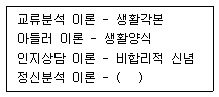
- 무의식
- 방어기제
- 심리성적 발달
- 전의식
(정답률: 알수없음)
5. 다음 중 일과 여가의 관계에 대한 가설에 해당되지 않는 것은?
- 전이(spill-over) 가설
- 보상(compensation) 가설
- 분리(segmentation) 가설
- 효능(efficacy) 가설
(정답률: 알수없음)
6. 내담자와 상담자의 가치관이 다를 경우 바람직한 태도가 아닌 것은?
- 상담자의 가치관을 직접 가르치거나 강요하지 않는다.
- 내담자가 가치관을 직면하고 검토하도록 한다.
- 내담자의 자기결정을 존중하고, 자기가치관을 알고 스스로 결정하도록 한다.
- 상담자의 올바른 자기가치관을 내담자에게 받아들이 도록 교육하고 설명한다.
(정답률: 알수없음)
7. 인간중심 상담이론과 인지상담이론의 공통점은?
- 자아실현경향성을 중시한다는 점
- 논박의 과정을 중시한다는 점
- 개인이 처한 환경을 보는 개인의 방식을 중시한다는 점
- 공감적 이해를 중시한다는 점
(정답률: 알수없음)
8. 모의상담연구의 단점에 해당하는 것은?
- 일반 실험연구보다 실험조건의 통제가 어렵다.
- 연구문제와 관련없는 다른 변인들을 무작위화(randomize) 시키기가 어렵다.
- 모의상담과정이 복잡하여 실제로 결과를 해석하기가 어렵다.
- 실험조건을 통제하면 할수록 연구의 외적타당도가 높아진다.
(정답률: 알수없음)
9. 직업상담 프로그램에서 자주 사용되는 직업카드 분류방법에 대한 설명 중 잘못된 것은?
- 실제 사용되는 직업카드는 대체로 50-60개 정도이다.
- 카드분류의 주요 목적은 내담자의 주제체계를 탐색하는 것이다.
- 직업카드에는 필요한 교육수준, Holland 유형, 한국 직업사전의 직업군 등의 정보가 포함된다.
- 직업카드 분류방법은 주로 자기탐색을 목적으로 사용된다.
(정답률: 알수없음)
10. 인지적-정서적 상담(RET)의 과정 중 다음 ( )에 알맞은 것은?
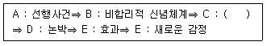
- 이유분석
- 신념체계 탐색
- 정서적/행동적 결과
- 지지
(정답률: 알수없음)
11. 진로상담 프로그램에서 내담자의 인지적 명확성의 평가 및 증진에 관한 설명 중 옳지 않은 것은?
- 내담자가 인지적 명확성에 문제가 없다면, 진로상담 과정은 특성-요인 지향적 접근과 유사하다.
- 경미하거나 심각한 정신건강의 문제나 정보결핍, 고정관념 등은 낮은 인지적 명확성의 원인이 된다.
- 내담자의 인지적 명확성과 동기를 평가하여 문제가 있을 때에는 심리적인 상황에 대한 프로그램을 먼저 실시한다.
- 미결정자나 우유부단자 등 인지적 명확성에 문제가 있는 내담자에게는 미래사회 이해 프로그램이 도움이 된다.
(정답률: 알수없음)
12. 긴즈버그(Ginzberg)가 제시한 진로발달단계에 있어서 현실기의 특징에 해당되는 것은?
- 일지향적 놀이를 통해 직업세계에 대한 최초의 가치 판단을 반영한다.
- 직업선택에 대한 결정과 진로선택에 대한 책임의식을 깨닫게 된다.
- 직업적인 열망과 관련하여 자신의 능력을 깨닫게 된다.
- 탐색을 통해 자신의 진로선택을 2-3가지 정도로 좁혀간다.
(정답률: 알수없음)
13. 다음 중 방어기제의 하나인 합리화(rationalization)의 예로 가장 적절한 것은?
- 어설픈 목수가 연장 나무란다.
- 초등학교 때 공격성이 강한 학생이 훗날 권투선수가 된다.
- 교원 임용 고사에 떨어지고 나서 교직은 전망이 없는 직업이라고 이야기한다.
- 아내의 맛없는 요리에 매우 화가 난 남편이 마침 집에 돌아오는 아들을 나무란다.
(정답률: 알수없음)
14. 경력개발 프로그램의 일반적인 과정을 순서대로 바르게 나열한 것은?
- 현 시스템의 평가 - 비젼과 목표설정 - 행동계획 실시 - 변화의 유지
- 비젼과 목표설정 - 현 시스템의 평가 - 변화의 유지 - 행동계획 실시
- 변화의 유지 - 비젼과 목표설정 - 행동계획 실시 - 현 시스템의 평가
- 행동계획 실시 - 현 행동계획 실시 - 변화의 유지 - 현 시스템의 평가
(정답률: 알수없음)
15. GATB 직업적성검사에서, 검사종목과 측정되는 적성이 바르게 연결된 것은?
- 기구대조 검사 -- 사무지각
- 종선기입 검사 -- 운동조절
- 입체공간 검사 -- 형태지각
- 명칭비교 검사 -- 언어능력
(정답률: 알수없음)
16. 다음 중 홀랜드 이론의 기본 개념에 대한 설명으로 틀린 것은?
- 홀랜드 이론은 진로와 관련된 특성들의 변화에 주목 하였다.
- 인간의 성격 특성을 6가지 유형으로 구분하였다.
- 작업의 환경을 6가지 유형으로 구분하였다.
- 개인의 특성과 환경적 특성간의 일치가 있을 때 개인의 직업적 만족이 크다고 가정하였다.
(정답률: 알수없음)
17. 진로 미결정과 우유부단과 같이 인지적 명확성에 문제가 있는 내담자에게 가장 필요한 직업상담 프로그램은?
- 자신에 대한 탐구 프로그램
- 직업복귀 프로그램
- 미래사회에 대한 이해 프로그램
- 취업 효능감 증진 프로그램
(정답률: 알수없음)
18. 상담자 과업으로서 분석, 종합, 진단, 예후, 상담, 추수 지도의 6가지 과정을 꼽는 상담이론은 다음 중 어떤 것인가?
- 합리적-정서적 행동상담
- 의사교류분석 상담
- 특성-요인 상담
- 행동수정
(정답률: 알수없음)
19. 게슈탈트 상담이론에 대한 설명 중 가장 올바른 것은?
- 가족배경의 탐색을 중요시한다는 점에서 가족상담 이론과 매우 밀접한 관련이 있다.
- 내사, 투사, 전경, 배경, 알아차림, 미해결과제 등의 개념이 중요하다.
- 다양하고 구체적인 기법이 부족하다는 점에서 인간중심 상담이론과 유사하다.
- 과거의 영향력을 중시하지 않는다는 점에서 현대 정신역동이론과 유사하다.
(정답률: 알수없음)
20. 발달적 직업상담 접근에서 직업성숙도 검사를 활용하여 얻게 되는 장점과 거리가 먼 것은?
- 직업상담 전략을 수립
- 태도적 측면과 인지적 측면을 이해
- 연령과 학력에 따른 발달단계 파악
- 부적응적 학습원인을 규명
(정답률: 알수없음)
21. 한 직무 과제에서 100개의 수행수준을 보인 사람에게 새로운 수행 목표를 제시할 경우, 목표 설정 이론에 따르면 다음 중 어느 조건에서 가장 동기가 높아지는가?
- 최선을 다하라는 목표
- 80개 목표
- 100개 목표
- 130개 목표
(정답률: 알수없음)
22. 홀랜드(Holland)의 직업상담이론에 관한 다음 설명 중 옳은 것은?
- 개인의 직업선택은 사회적 교육이 적극 반영되는 것이다.
- 같은 직업을 가진 사람이라 하더라도 그들이 문제상황에 대처하는 방식과 대인환경을 구성하는 방식에는 큰 차이가 있다.
- 직업에 대한 만족과 안정성, 업적 등은 개인의 성격과 직업환경 간의 일치성에 달려있다.
- 흥미검사는 성격검사와는 무관한 검사이다.
(정답률: 알수없음)
23. 다음 중 한국카운슬러협회에서 발표한 상담자 윤리강령에 비추어볼 때 올바른 행동지침은?
- 상담자는 때때로 자기가 속한 기관의 목적 및 방침에 모순되는 활동을 할 필요가 있다.
- 상담자는 상담의 효과를 위해 자기가 실제 가지고 있는 자격 및 경험 수준을 벗어나는 인상을 줄 필요가 있다.
- 상담자는 자신의 개인문제 및 능력의 한계 때문에 도움을 주지 못한다고 판단할 때에는 즉시 상담을 종결해야 한다.
- 교육장면이나 연구용으로 내담자에 관한 정보를 사용해야할 경우, 내담자와 합의한 후 그 정체가 전혀 노출되지 않도록 해야한다.
(정답률: 알수없음)
24. 다음 중 다른 셋과 용도가 다른 검사는 어느 것인가?
- 16PF
- MMPI
- GATB
- Rorschach Test
(정답률: 알수없음)
25. 일정한 규칙에 따라 어떤 사건이나 대상의 특성에 숫자를 부여하는 과정은?
- 척도
- 조작적 정의
- 개념적 정의
- 측정
(정답률: 알수없음)
26. 다음 중 직무만족이론과 관계가 없는 것은?
- 동기-위생이론
- 개인 내 비교과정 이론
- 5요인이론
- 대인비교과정이론
(정답률: 알수없음)
27. 진로결정에 영향을 주는 다양한 요인 중에서 Krumboltz가 제시한 대표적인 요인이 아닌 것은?
- 유전적 요인과 특별한 능력
- 환경적 조건과 주요 사건
- 학습경험
- 직업적응
(정답률: 알수없음)
28. 에릭슨의 인성발달과정에 있어서 피아제가 말하는 인지발달이론의 전조작기에 해당되는 단계는?
- 신뢰 대 불신
- 주도성 대 죄책감
- 근면성 대 열등감
- 자아정체감 대 자아정체감 혼란
(정답률: 알수없음)
29. 집단상담의 특징을 가장 올바르게 기술한 것은?
- 개인상담과는 달리 여러 사람들에게 받은 피드백을 기초로 새로운 행동을 집단 내에서 여러 사람에게 직접 실험해볼 수 있다.
- 한 내담자의 문제를 해결하기 위해 여러사람이 함께 노력하기 때문에 심각한 심리적 문제를 가진 사람에 게 적합하다.
- 한 내담자가 여러 사람을 상대해야하기 때문에 내담자 자신이 상담장면에 얼마나 깊이 관여해야 하는지 조절하기가 어렵다.
- 집단상담도 결국 같은 상담이기 때문에 개인상담과 동일한 변화요인들이 작용하여 사람을 변화시킨다.
(정답률: 알수없음)
30. 다음 중 컴퓨터를 이용한 진로지도 시스템에 대한 설명 중 틀린 것은?
- SIGI PLUS, DISCOVER, 아로 등이 대표적인 컴퓨터화된 진로지도 시스템이다.
- 방대한 데이터와 연결되어 검사 결과와 직업정보가 바로 연계된다.
- 대부분 적성검사, 흥미검사, 가치관검사 등 다양한 검사 결과를 종합할 수 있도록 제시되어 있다.
- 자기주도적인 프로그램이므로 상담자의 지도가 필요 없다.
(정답률: 알수없음)
31. 대부분의 직무평가 계획에서 사용되는 준거가 아닌 것은?
- 책임
- 흥미
- 기술
- 노력과 작업조건
(정답률: 알수없음)
32. 진로 발달 이론과 그 주요 개념이 올바르게 짝지워진 것은?
- 특성이론 - 개인의 특성 평가, 일의 요소와 특성을 관련시킴
- 발달이론 - 직업선택은 욕구에 기초함
- 사회이론 - 진로의사 결정은 개인의 진로발달에 있어 중요요소임
- 사회학습이론 - 직업발달과 직업선택에 있어서 사회적인 영향을 강조함
(정답률: 알수없음)
33. 직업상담자가 갖추어야 할 상담의 기초 기법 중 내담자가 전달하려는 내용에서 한걸음 더 나아가 내담자의 입장이 되어 그의 주관적 세계를 이해하려는 것은?
- 요약과 재진술
- 명료화
- 직면
- 공감
(정답률: 알수없음)
34. 다음 중 공인(concurrent)타당도와 관련된 설명은 어느 것인가?
- 중학교 1학년생의 영어듣기능력을 평가하기 위해서 TOEFL의 청취력 문항을 사용하는 것은 맞지 않다.
- 기존의 지능검사와 새로 개발된 지능검사와의 상관을 구한다.
- 신입사원 선발을 위해 직무적성검사를 실시하였다면, 1년후에 입사시 받은 검사점수와 현재의 근무성적을 비교해 본다.
- 신입사원 선발을 위해 직무적성검사를 개발하고자 한다면 개발된 검사를 기존의 직원들을 대상으로 실시하고 그들의 근무평점과의 상관을 구한다.
(정답률: 알수없음)
35. "서비스 조직에서 무례한 고객 때문에 나는 화가 많이 났다. 이 스트레스를 벗어나기 위하여 나는 고객이 왜 그런 무례한 행동을 했는지에 대해서 심사숙고하였다. 결국 나는 고객의 행동이 내 책임이 아니라 고객 자신의 성격 때문이라고 결론을 내렸다." 이와 관련된 스트레스 관리법은 다음 중 무엇인가?
- 감정 이입법
- 감정 왜곡법
- 인지 재구성
- 분노 관리법
(정답률: 알수없음)
36. 일반적으로 볼 때, 업무수행 성공을 예측하는데 있어서 신뢰도와 타당도가 가장 높은 심리검사는?
- 성격검사
- 인지능력검사
- 흥미검사
- 신체능력검사
(정답률: 알수없음)
37. 직업의사결정을 촉진하는 상담기법으로 "6개의 생각하는 모자(six thinking hats)"기법에 대한 설명으로 틀린 것은?
- 창의적으로 정보를 탐색함으로써 이용 가능한 정보의 양과 질을 확장시키기 위한 측면 의사결정법(lateral decision-making aids)이다.
- 가능한 직업 대안을 열거한 뒤, 각 대안을 선택했을 때 예상되는 개인적인 득실을 목록으로 작성하고 총점을 계산한다.
- 직업상담자는 창의적 의사결정자는 6가지 색깔의 생각하는 모자를 쓰고 있다는 이야기를 들려주고, 내담자가 각각의 모자를 쓰고 역할을 수행하도록 한다.
- 측면적 사고기법에서의 사고 유형들 모두가 유용하기는 하지만 궁극적으로 의사결정자에게 가장 필요한 것은 합리적 접근이라고 제안한다.
(정답률: 알수없음)
38. 컴퓨터 게임을 좋아하고 독서를 싫어하는 아동에게 책을 읽는 버릇을 길러주기 위해 주어진 양의 독서를 끝마쳐야 게임을 하게 하는 것과 관련이 깊은 것은?
- 프리맥 원리
- 토큰 체제
- 행동 조형
- 양립불가능한 행동의 병치
(정답률: 알수없음)
39. 다음 중 백분위에 대한 올바른 설명은?
- 백분위 98%란 그 점수보다 낮은 점수를 가진 사람이 전체의 2%라는 뜻이다.
- 백분위 1%의 차이는 점수 분포 상의 위치와 관계없이 일정하다.
- 평균 근처에서의 백분위 차이는 양극단에서의 백분위 차이보다 실제 점수 차이가 작다.
- 백분위 50%는 그 분포에서의 평균과 일치한다.
(정답률: 알수없음)
40. 다음 중 홀랜드의 직업흥미검사에 대한 설명으로 적절한 것은?
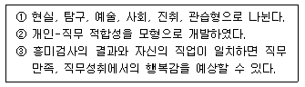
- ①, ②
- ②, ③
- ①, ③
- ①, ②, ③
(정답률: 알수없음)
2과목: 고급직업정보론(노동시장론 포함)
41. 해리슨(R. Harrison)이 제시한 공식화(formalization)와 집권화(centralization) 정도를 기준으로 기업문화를 분류할 경우 집권화는 약하지만 공식화는 강한 문화로서 구성원들의 역할과 업무수행이 과업(task) 중심으로 팀웍을 이루어 행해지는 기업문화유형은?
- 관료조직문화(bureaucratic culture)
- 핵화조직문화(atomistic culture)
- 행렬조직문화(matrix culture)
- 권력조직문화(power culture)
(정답률: 알수없음)
42. 구직자가 온라인상의 고용정보 워크넷(www.work.go.kr)에서 받을 수 없는 직업심리검사는?
- 일반직업적성검사
- 청소년직업흥미검사
- 구직효율성검사
- 창업진단검사
(정답률: 알수없음)
43. 다음 중 직업정보 수집시 한 사람이 전혀 상관성이 없는 두 가지 이상의 직업에 종사할 경우 그 사람의 직업을 결정하는 일반적 원칙에 해당하지 않는 것은?
- 노동 강도가 높은 직업을 택한다.
- 취업시간이 많은 직업을 택한다.
- 수입이 많은 직업을 택한다
- 조사시 최근의 직업을 택한다
(정답률: 알수없음)
44. 다음 표에는 근로자수가 증가할 때 볼펜 생산량의 변화가 나타나 있다. 임금이 시간당 5,000원이고 볼펜 가격이 개당 2,000원이라면, 경쟁기업은 몇 명의 근로자를 고용할 것인가?
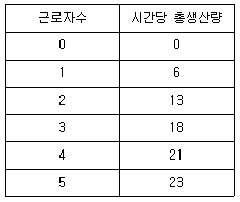
- 2명
- 3명
- 4명
- 5명
(정답률: 알수없음)
45. 고용안정정보망(work-net)에서 직종별 종사자수, 직종별 평균임금 등을 알아볼 수 있는 것은?
- 취업나침반
- 직업탐색
- 구인광고
- 취업준비
(정답률: 알수없음)
46. 다음 중 집단성과급제의 형태가 아닌 것은?
- 맨체스터 플랜(manchester plan)
- 스캔론 플랜(scanlon plan)
- 프랜치 시스템(french system)
- 럭커 플랜(rucker plan)
(정답률: 알수없음)
47. 다음의 직업정보에서 사용한 조사방법으로 맞는 것은?
- 직업사전-직무조사(사업체 방문 중심)
- 직업전망서-재직자 설문조사(직업 당 60명씩)
- 한국직업정보시스템-재직자 및 전문가 면접
- 산업· 직업별 고용구조 조사-재직자 설문조사(사업체 방문 중심)
(정답률: 알수없음)
48. 다음은 직무분석과 관련한 용어정의이다. 어떤 용어에 대한 정의인가?
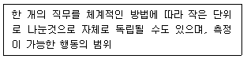
- 직무
- 책무
- 작업
- 작업요소
(정답률: 알수없음)
49. 근로자가 보다 열심히 일하도록 하기 위한 유인으로서 시장임금보다 높은 임금을 지불한다는 효율임금(efficiency wage)이론을 다음과 같은 간단한 모형으로 나타내었다. E =(w-x)a (단, E는 근로자가 기울이는 노력, w는 효율임금, x는 시장임금이며 0
- a/1-x
- x/1-a
- 1-a/x
- 1-x/a
(정답률: 알수없음)
50. 전략적 신기술산업은 인적자원의 육성과 밀접한 관련성이 있다. 최근 정부가 전략적으로 육성할 필요가 있다고 제시한 6대 신기술 전략산업에 해당되지 않는 것은?
- BT(Bio Technology)
- NT(Nano Technology)
- ET(Education Technology)
- ST(Space Technology)
(정답률: 알수없음)
51. 2003년 현재 훈련기관과 기업간에 훈련직종· 수준· 방법 및 훈련수료후 취업 등에 관한 사항에 대하여 훈련약정을 체결하여 훈련을 실시하고 약정기업은 수료생을 우선 채용하는 훈련은?
- 실업자재취직훈련
- 취업훈련
- 정부위탁훈련
- 맞춤훈련
(정답률: 알수없음)
52. 다음 중 근로생활의 질(QWL)을 낮추는 것은?
- 적정하고 공정한 보상을 한다.
- 안전하고 쾌적한 작업환경을 제공한다.
- 작업조직을 비제도화한다.
- 직장과 가정생활 사이에 조화가 이루어지도록 한다.
(정답률: 알수없음)
53. 다음 중 응시하고자 하는 종목에 관한 기술기초이론지식 또는 숙련기능을 바탕으로 복합적인 기능업무를 수행할 수 있는 능력의 유무를 평가하는 자격등급은?
- 기능장
- 기능사
- 기사
- 산업기사
(정답률: 알수없음)
54. 한국직업사전(2003)에서 작업강도에 관한 설명으로 틀린 것은?
- 아주 가벼운 작업 - 최고 4kg의 물건을 들어 올리고, 때때로 장부, 대장, 소도구 등을 들어올리거나 운반한다.
- 가벼운 작업 - 최고 8kg의 물건을 들어 올리고 4kg정도의 물건을 빈번히 들어 올리거나 운반한다.
- 보통 작업 - 최고 20kg의 물건을 들어 올리고 10kg정도의 물건을 빈번히 들어 올리거나 운반한다.
- 아주 힘든 작업 - 최고 40kg의 물건을 들어 올리고 20kg정도의 물건을 빈번히 들어 올리거나 운반한다.
(정답률: 알수없음)
55. 다음 중 노동부에서 작성하는 통계자료가 아닌 것은?
- 고용동향전망조사
- 한국노동패널
- 소규모사업체근로실태조사
- 노동력수요동향조사
(정답률: 알수없음)
56. 경기침체로 실업률이 5%에서 7%로 상승하였다. 실망노동 효과가 부가노동효과보다 크다면 잠재실업자를 포함할 때 실제 실업률은?
- 5% 미만
- 5%
- 5% 초과 7% 사이
- 7% 초과
(정답률: 알수없음)
57. 임금학설인 임금생존비설과 임금기금설에 관한 설명 중 틀린 것은?
- 임금생존비설은 노동수요측을 무시한 이론이라는 비판을 받고 있다.
- 임금생존비설은 임금이 노동공급에 의해 결정된다고 보는 점에서 장기적 관점에 입각한 이론이다.
- 임금기금설은 현실자본량으로 임금문제를 설명하기 때문에 단기적 관점에 입각한 이론이다.
- 임금기금설은 임금생존비설을 부분적으로 계승한 것으로 노동공급측을 강조하는 이론이다.
(정답률: 알수없음)
58. 다음 직업 중 한국표준직업분류(2000)에서 대분류가 다른 것은?
- 점술가
- 장의사
- 미용사
- 음식점 접수원
(정답률: 알수없음)
59. 어떤 나라 자동차산업의 노동에 대한 수요가 비탄력적이라고 하자. 그 이유에 대한 설명으로 가장 적합한 것은?
- 근로자들을 쉽게 대체할 수 있다.
- 생산비 중 노동비용이 차지하는 비중이 크다.
- 자동차시장이 과점시장이어서 자동차가격변동폭이 작다.
- 조립기계는 기술이 크게 필요하지 않으므로 쉽게 조달할 수 있다.
(정답률: 알수없음)
60. 직능급 임금체계와 관련된 내용으로 볼 수 없는 것은?
- 직무능력이 중심이기 때문에 직무평가가 불필요하다.
- 직능급은 개별 근로자에게 동기부여효과가 강하다.
- 직무급의 경우와 같이 적정배치가 반드시 전제되어야 한다.
- 연공급의 속인적 요소와 직무급의 직무적 요소를 결합한 것이다.
(정답률: 알수없음)
61. 다음 중 광의의 노동통계에 포함되는 것은?
- 물가
- 국토
- 정치
- 보건
(정답률: 알수없음)
62. 다음 중 한국표준산업분류(2000)에 대한 설명으로 틀린 것은?
- 사업체가 수행하는 산업활동을 그 유사성에 따라 분류한 것이다.
- 현행 산업분류는 UN 국제표준산업분류를 기초로 작성되었다.
- 현행 산업분류는 산업구조의 변화를 반영하기 위하여 2000년 제8차 개정으로 시행되었다.
- 분류체계는 대분류, 중분류, 소분류, 세분류까지 총 4단계로 계층적으로 배열되어 있다.
(정답률: 알수없음)
63. 노동조합의 단체교섭구조는 다양하다. 노동조합들 및 사용자들이 각각의 대표를 통해 교섭하는 것을 무엇이라고 하는가?
- 집단교섭
- 통일교섭
- 패턴교섭
- 대각선교섭
(정답률: 알수없음)
64. 임금을 성과급이나 할증급 등 노동 능률에 직접 관련시켜 지급하는 능률급 방식 중에서 아래의 설명 내용과 일치하는 것은?
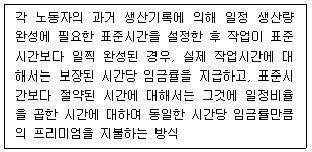
- 로완(Rowan) 할증급제
- 할시(Halsey) 할증급제
- 테일러(Taylor) 성과급제
- 디머(Diemer) 할증급제
(정답률: 알수없음)
65. 여성의 연령에 따른 경제활동참가율의 추이를 나타내는 그래프가 다음의 그림처럼 M자형을 띠고 있다. 이로부터 유추할 수 있는 정책적 시사점으로 가장 적당한 것은 무엇인가?
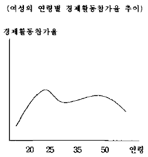
- 미혼여성일수록 경제활동참가율이 낮으므로 미혼여성의 취업대책이 필요하다.
- 출산· 육아가 여성의 경제활동참가를 저해하는 요인이므로 이에 대한 대책이 필요하다.
- 저학력 여성의 경제활동참가율이 낮으므로 이에 대한 대책이 필요하다.
- 여성에 대한 임금차별이 크므로 이에 대한 대책이 필요하다.
(정답률: 알수없음)
66. 자발적 이직(사직)이 발생하는 이유에 대한 설명으로 옳지 않은 것은?
- 저임금 근로자의 경우 자발적 이직의 확률이 높다.
- 경기가 호황일 때 자발적 이직의 확률이 높아진다.
- 일반적으로 연령이 높을수록 자발적 이직은 줄어든다.
- 직장이동에 드는 비용이 높을수록 자발적 이직의 확률이 높아진다.
(정답률: 알수없음)
67. 직장탐색(job search)모형의 예측으로 옳지 않은 것은?
- 실업은 불완전정보에 의해 발생하는 마찰적 실업이며 개인의 합리적 선택의 결과이다.
- 실업기간 중 실업급여가 클수록 실업비용이 낮아지기 때문에 실업기간은 길어진다.
- 직업정보망체계의 확충은 개인의 기술수준에 적합한 직장에의 취업확률을 높인다.
- 직장탐색 후 얻는 직장에서의 예상근무기간이 짧을수록 직장탐색기간이 길어진다.
(정답률: 알수없음)
68. 한국표준직업분류(2000)에 따른 직업 정의 중에서 직업활동으로 볼 수 있는 것은?
- 전세금, 주식 배당 등과 같은 재산수입을 얻는 경우
- 자기 집에서 가사활동을 하는 경우
- 정규주간 교육기관에서 재학하고 있는 경우
- 원목으로 종교활동을 하는 경우
(정답률: 알수없음)
69. 다음은 자격(면허)와 응시자격을 연결한 것으로 틀린 것은?
- 안마사 - 중학교 과정 이상의 교육을 받고 보건복지 부장관이 지정하는 안마수련원에서 2년 이상 안마수련과정을 마친 앞을 보지 못하는 자
- 핵연료물질취급면허 - 전문대학 졸업자로 실무경력 1년이상인자
- 방사선사 - 고등학교 이상의 학교 졸업자로 보건복지 부장관이 지정하는 보건기관 또는 의료기관에서 취득하고자 하는 면허에 상응하는 보건의료 업무를 3년이상 수습한 자
- ISO9000인증심사원 - 한국품질환경인증협회의 장으로 부터 심사원보 자격인증을 받은 자로 심사반의 보조자로서 환경경영체 제규격에 의한 심사의 전과정에 최소한 20일 이상의 심사에 참가한 경력이 있는 자
(정답률: 알수없음)
70. 다음의 그림에서 W0와 E0 는 각각 시장균형임금과 시장균형고용량 이다. 이때 최저임금을 W1 으로 설정하면 비자발적 실업이 발생한다. 이 비자발적 실업 중 최저임금 설정으로 인한 노동수요 감소분의 크기는 얼마인가?
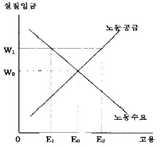
- 0E1
- E1E0
- E0E2
- E1E2
(정답률: 알수없음)
71. 다음과 같은 내용을 수행하는 한국표준직업분류(2000)상의 대분류는?
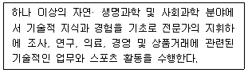
- 대분류0 : 고위임직원 및 관리자
- 대분류1 : 전문가
- 대분류2 : 기술공 및 준전문가
- 대분류3 : 사무종사자
(정답률: 알수없음)
72. 다음 중 산업활동의 정의에 가장 적합한 것은?
- 유사한 성질을 갖는 상품과 재화의 생산과 관련된 활동의 집합
- 각 생산단위가 노동, 자본, 원료 등 자원을 투입하여 재화 또는 서비스를 생산 또는 제공하는 일련의 활동 과정
- 재화 또는 서비스를 생산하는 일련의 활동과정
- 국민경제의 기초를 이루는 인적, 물적 자원을 이용하여 다양한 재화 또는 서비스를 생산하는 일련의 활동 과정
(정답률: 알수없음)
73. 다음은 경제활동인구에 대한 통계이다. 취업자의 총수는?
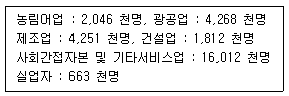
- 29,⑤2천명
- 28,389천명
- 24,138천명
- 22,326천명
(정답률: 알수없음)
74. 한국직업사전(2003)의 직무개요와 부가직업정보 사항이다. 해당되는 직업은?
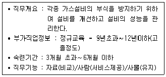
- 끌질원
- 보선원
- 족장원
- 방식관리원
(정답률: 알수없음)
75. 총인구 2,500만명 중 15세 이상 인구가 2,000만명이다. 취업자가 1,500만명, 실업자가 100만명이라면 실업률과 경제활동참가율은 각각 얼마인가?
- 5%, 64%
- 5%, 80%
- 6.25%, 64%
- 6.25%, 80%
(정답률: 알수없음)
76. 사용자측이 부가급여 지급을 선호하는 이유가 아닌 것은?
- 부가급여 만큼 임금액이 감소하면, 사용자에게 그만큼 조세와 보험료 부담이 감소된다.
- 정부가 임금 등에 대한 규제를 강화할 때, 그것을 회피하는 수단으로서 부가급여 수준을 높일 수 있다.
- 각종 채용 및 훈련비용을 절감하고 장기근속을 유도하는 방안으로 각종 부가급여를 이용한다.
- 채용과정에서 성, 연령, 인종, 기혼ㆍ미혼 여부 등으로 차별대우하는 것을 방지하기 위함이다.
(정답률: 알수없음)
77. 최근 전세계적으로 노조조직률이 하락하고 있다. 그 이유로 가장 옳지 않은 것은?
- 근로소득 불평등이 축소되었다.
- 사회주의국가들이 대부분 패망하였다.
- 서비스업 근로자 비율이 증가하고 있다.
- 다양한 인적자원관리 방식이 개발되었다.
(정답률: 알수없음)
78. 다음 중 유능한 노동자가 자신의 유능성을 내보이지 않고, 오히려 최소한의 기준만 충족시키면서 빈둥거리는 이유를 설명하고 있는 것은?
- 주인-대리인 효과
- 무임승차 효과
- 자기선택 효과
- 톱니효과
(정답률: 알수없음)
79. 다음 ( )에 들어갈 말로 적당한 것은?
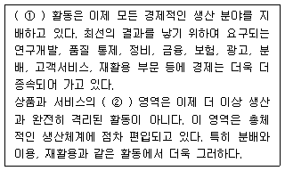
- ① 제조 - ② 분배
- ① 영리 - ② 판매
- ① 서비스 - ② 소비
- ① 산업 - ② 교환
(정답률: 알수없음)
80. 다음 중 경쟁시장하에 있는 기업의 단기 노동 수요곡선이 우하향 하는 이유로 가장 타당한 것은?
- 노동의 한계생산력이 체감하기 때문이다.
- 노동의 한계생산력이 체증하기 때문이다.
- 기업의 한계수입이 체증하기 때문이다.
- 기업의 한계수입이 불변이기 때문이다.
(정답률: 알수없음)
3과목: 노동관계법규
81. 고령자의 고용촉진에 관한 설명으로 틀린 것은?
- 노동부장관은 상시고용하는 고령자의 비율이 기준고용율에 미달하는 사업주에 대하여 기준고용율 이행계획을 작성하여 제출하도록 요청할 수 있다.
- 사업주가 기준고용율에 해당하는 고령자를 고용하는 경우에는 조세특례법이 정하는 바에 따라 조세를 감면한다.
- 국가 및 지방자치단체, 정부투자기관관리기본법에 의한 정부투자기관의 장은 그 기관의 우선고용직종에 고령자와 준고령자를 우선적으로 고용하여야 한다.
- 노동부장관은 고령자와 준고령자의 우선적 채용실적이 부진한 자에 대하여 고령자 및 준고령자의 고용확대를 요청할 수 있다.
(정답률: 알수없음)
82. 고용보험법이 명시하고 있는 고용보험법의 목적에 관한 설명으로 틀린 것은?
- 사업주의 구조조정을 용이하게 함
- 국가의 직업지도· 직업소개기능을 강화함
- 근로자가 실업한 경우에 생활에 필요한 급여를 실시함
- 근로자의 생활의 안정과 구직활동을 촉진함
(정답률: 알수없음)
83. 무료직업소개사업에 대한 다음의 설명 중 잘못된 것은?
- 한국산업인력공단이 하는 직업소개는 신고없이도 가능하다.
- 한국장애인고용촉진공단이 장애인을 대상으로 하는 직업소개는 신고없이도 가능하다.
- 국외무료직업소개업을 하고자 하는 자는 시장· 군수· 구청장에게 신고하여야 한다.
- 무료직업소개사업을 하고자 하는 자는 대통령령이 정하는 비영리법인 또는 공익단체로 한다.
(정답률: 알수없음)
84. 근로자직업훈련촉진법상 훈련계약에 관한 다음 설명 중 틀린 것은?
- 사업주와 직업능력개발훈련을 받고자 하는 근로자는직업능력개발훈련의 실시에 따른 권리의무등에 관한 사항을 정하는 훈련계약을 체결할 수 있다.
- 훈련이수후 사업주가 지정하는 업무에 종사하도록 할수 있는 기간은 5년의 범위이내로 하되, 훈련기간의 3배를 초과할 수 없다.
- 훈련계약을 체결하지 아니한 경우에 있어서 고용근로자가 받은 직업능력개발훈련에 대하여는 당해 근로자가 근로를 제공한 것으로 보지 아니한다.
- 기준근로시간외의 연장된 훈련시간에 대하여는 현장 훈련의 경우를 제외하고는 연장근로와 야간근로에 대한 임금을 지급하지 아니할 수 있다.
(정답률: 알수없음)
85. 다음 중 직업안정법이 규율하는 사항에 해당하지 않는 것은?
- 근로자파견사업
- 근로자공급사업
- 국가 및 지방자치단체의 직업소개
- 민간이 행하는 직업소개사업
(정답률: 알수없음)
86. 헌법 제32조가 규정하고 있는 법률이 정하는 바에 의하여 우선적으로 근로기회를 부여받는 유가족이 아닌 자는?
- 국가유공자
- 상이군인
- 전몰경찰
- 제대군인
(정답률: 알수없음)
87. 다음 중 직업능력개발훈련을 위탁한 자가 이를 위탁받은 훈련기관에 대하여 그 위탁을 해지할 수 있는 경우가 아닌 것은?
- 허위 기타 부정한 방법으로 위탁을 받은 경우
- 위탁계약에 위반하여 훈련을 실시한 경우
- 허위 그 밖의 부정한 방법에 의하여 훈련비용을 청구한 경우
- 대표자가 형사소추를 받은 경우
(정답률: 알수없음)
88. 고용보험법상 사업의 일괄적용의 요건이 아닌 것은?
- 사업주가 동일인 일 것
- 각각의 사업은 기간의 정함이 없는 사업일 것
- 사업의 종류, 연간공사실적액 등이 대통령령이 정하는 요건에 해당할 것
- 고용보험법의 적용을 받고자 하는 경우 근로자 과반수의 동의와 노동부장관의 승인을 얻을 것
(정답률: 알수없음)
89. 직업능력개발훈련교사의 결격사유에 해당하지 않는 것은?
- 금치산자· 한정치산자 또는 미성년자
- 파산자로서 복권되지 아니한 자
- 금고이상의 형의 집행유예 선고를 받고 그 유예기간 중에 있는 자
- 자격증을 대여하여 3년전에 자격이 취소된 사실이 있는 자
(정답률: 알수없음)
90. 고용정책기본법에서 대량고용변동의 신고기준의 내용인 "1월 이내의 기간에 이직하는 근로자의 수"에 해당되는 자는?
- 일용근로자
- 수습 사용된 날부터 6월 이내의 자
- 자기의 사정 또는 귀책사유로 이직하는 자
- 상시근무를 요하지 아니하는 자로 고용된 자
(정답률: 알수없음)
91. 다음 중 국가 또는 사업주의 장애인 고용의무에 대한 설명으로 틀린 것은?
- 국가 및 지방자치단체의 장은 장애인을 소속공무원정원의 100분의 2이상 고용하여야 한다.
- 국가 및 지방자치단체 각 시험실시기관의 장은 장애인이 원칙적으로 신규채용인원의 100분의 2이상 채용되도록 시험을 실시하여야 한다.
- 국가 또는 지방자치단체의 장애인 의무고용은 직무분야· 직종· 직급 등에 따라 달리 적용할 수 없다.
- 의무고용률에 미달하는 장애인을 고용하는 사업주는 대통령령이 정하는 바에 의하여 매년 노동부장관에게 장애인부담금을 납부하여야 한다.
(정답률: 알수없음)
92. 근로시간에 관한 현행 근로기준법의 규정 내용으로 타당하지 않는 것은?
- 광고업에서는 사용자와 근로자대표의 서면합의에 의하여 주18시간의 연장근로를 정할 수 있다.
- 수산사업에서는 사용자가 노동부장관의 승인을 얻은 경우에 한하여 근로시간에 관한 근로기준법의 규정의 적용을 받지 아니할 수 있다.
- 15세이상 18세미만인 자의 근로시간은 1일에 7시간, 1주일에 42시간을 초과하지 못하지만, 당사자간의 합의에 의하여 1일에 1시간, 1주일에 6시간을 한도로 연장할 수 있다.
- 사용자는 18세 이상의 여성을 오후 10시부터 오전 6시까지의 사이 및 휴일에 근로시키고자 하는 경우에는 당해 근로자의 동의를 얻어야 한다.
(정답률: 알수없음)
93. 장애인고용촉진위원회에 관한 다음 설명 중 틀린 것은?
- 위원회는 장애인 고용촉진 및 직업재활을 위한 기본계획을 심의한다.
- 위원회에는 5인 이내의 상근연구위원을 둔다.
- 위원회의 위원 중 과반수이상은 장애인으로 하여야한다.
- 위원회의 운영에 필요한 사항은 대통령령으로 정한다.
(정답률: 알수없음)
94. 고령자고용촉진법상의 고령자인재은행에 관한 다음의 설명 중 틀린 것은?
- 노동부장관은 유료직업소개사업을 하는 비영리법인 또는 공익단체를 고령자인재은행으로 지정할 수 있다.
- 고령자인재은행은 고령자에 대한 구인· 구직등록, 직업지도 및 취업알선의 업무를 수행한다.
- 노동부장관은 고령자인재은행에 대하여 직업안정업무를 행하는 행정기관이 수집한 구인· 구직정보, 지역내의 노동력 수급상황 기타 필요한 자료를 제공할 수 있다.
- 노동부장관은 고령자인재은행에 대하여 예산의 범위안에서 소요경비의 전부 또는 일부를 지원할 수 있다.
(정답률: 알수없음)
95. 다음 중 고용정책심의회의 심의· 조정 사항이 아닌 것은?
- 고용동향과 인력의 수급전망에 관한 기본계획
- 고용보험요율의 변경에 관한 사항
- 근로자의 직업능력 개발· 향상을 위한 주요시책
- 근로자의 산업안전과 재해예방을 위한 주요시책
(정답률: 알수없음)
96. 고용보험법에서 취업촉진수당에 대한 설명 중 옳지 않은 것은?
- 조기재취업수당은 실직자의 실직기간을 최소화시키고 안정된 직장에 조기에 재취직을 장려하기 위한 인센티브 제도임.
- 직업능력개발수당은 수급자격자가 직업안정기관의 장이 지시하는 직업능력개발훈련을 받는 경우 구직급여외에 지급하는 일정액의 수당임.
- 광역구직활동비는 수급자격자가 직업안정기관의 장의소개에 의하여 광범위한 지역에 걸쳐 구직활동을 하는 경우에 지급할 수 있음.
- 이주비는 대기기간 이내에 수급자격자가 취직하여 그 주거를 이전하는 경우에 지급할 수 있음.
(정답률: 알수없음)
97. 다음 직업상담원에 관한 설명 중 틀린 것은?
- 유료직업소개사업의 종사자중 직업상담원외의 자는 직업소개에 관한 사무를 담당하여서는 아니된다.
- 유료직업소개사업을 하는 자는 법인별로 직업상담원을 1인이상 두어야 한다.
- 노동부장관은 직업안정기관 및 인력은행에 직업소개· 직업지도 및 고용정보의 제공등의 업무를 담당하는 공무원이 아닌 직업상담원을 배치할 수 있다.
- 노동부장관은 민간직업상담원을 배치함에 있어서 직업안정기관 및 인력은행이 위치한 지역의 인구· 근로자수 및 사업장수 등을 고려하여야 한다.
(정답률: 알수없음)
98. 남녀고용평등법상 규정된 내용이 아닌 것은?
- 정년· 퇴직 및 해고에 있어서 남녀차별금지
- 산전후 휴가에 대한 지원
- 직장과 가정생활의 양립의 지원
- 생리휴가
(정답률: 알수없음)
99. 다음 중 근로기준법상 남녀차별금지의 대상이 아닌 것은?
- 교육· 배치· 승진
- 정년· 퇴직· 해고
- 임금
- 모집· 채용
(정답률: 알수없음)
100. 경영상 이유에 의한 해고가 행해진 사업장에서 당해 업무에 파견근로자를 사용하고자 하는 경우, 사업장 근로자 과반수로 조직된 노동조합이 이에 동의하는 때에는 경영상 해고 후 얼마간의 기간이 경과하여야 파견근로자를 사용할 수 있는가?
- 6월
- 1년
- 1년 6월
- 2년
(정답률: 알수없음)